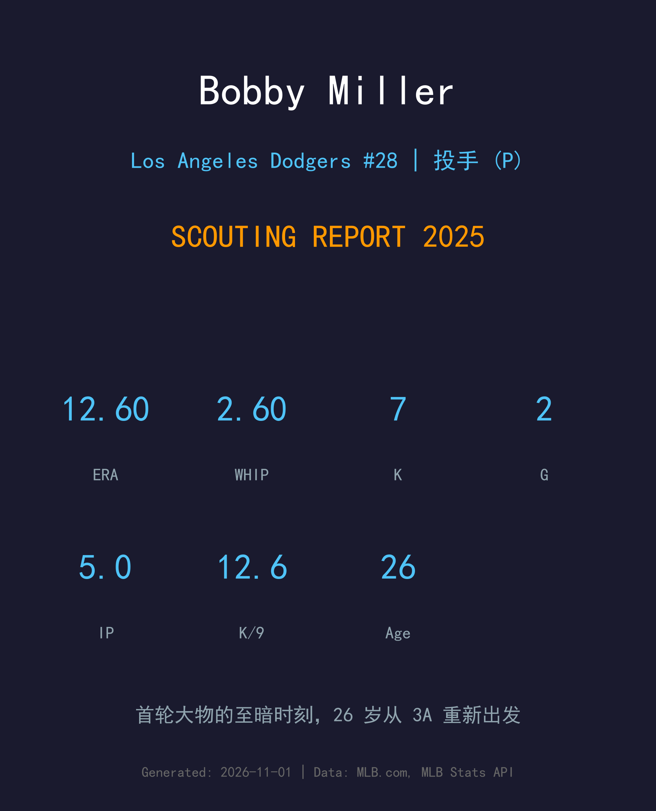
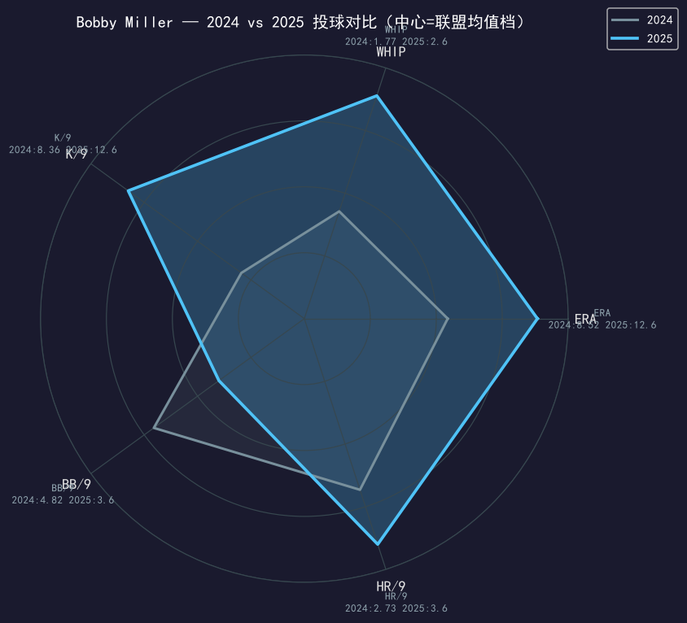
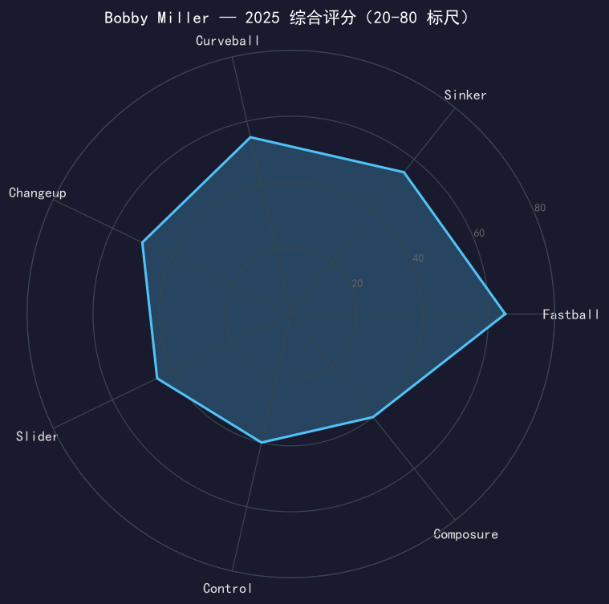

Los Angeles Dodgers #28 | 投手 | 右投 | 首轮大物的至暗时刻，26 岁从 3A 重新出发

Bobby Miller 的 2025 年只持续了 5 局：3 月 12 日被下放 3A 后，他在俄克拉荷马城度过了整整六个月，直到 9 月底扩编才被想起——2 场出赛（含 1 场先发）、自责分率 12.60，11 月 2 日重新被激活回 40 人名单。数字冰冷，但名单操作说明道奇还没有放弃他。
这仍然是同一位投手：2023 年新人年 22 场先发、11-4、自责分率 3.76、WHIP 1.10，是当时全联盟最耀眼的新秀先发；2024 年 8.52 的崩盘和 2025 年的 5 局挣扎，没有改变他的 raw stuff——97.6 mph 四缝线、97.2 mph 伸卡、五球种结构，在 26 岁的身体里依然是首轮第 29 顺位的天赋。
从 2025 年 11 月的视角看，Miller 站在职业生涯最危险的悬崖边：连续三年大联盟答卷一年比一年短，但球速与球种依旧顶配。道奇手里握着一把还值钱的「坏掉的吉他」——修好它，是一架昂贵的乐器；修不好，2026 年就是最后通牒。
在 3A 投出统治级赛季后被 Baseball America 等权威机构列为道奇体系第一新秀、全联盟前 30 的新秀投手——2021 年选秀首轮第 29 顺位的价值兑现预期达到顶点。
5 月 23 日登上大联盟，22 场先发、11 胜 4 败、自责分率 3.76、WHIP 1.10、124.1 局 119 次三振——一个近乎完美的处子赛季，他看起来像道奇轮值的未来十年。
9 月 29 日的扩编召回与 11 月 2 日的名单激活，说明球队仍把他视作 40 人名单资产；对一位刚从 8.52 赛季走出来的 26 岁投手来说，「还在名单里」本身就是胜利。

| 赛季 | G | GS | W-L | ERA | WHIP | IP | SO | BB | K/9 | BB/9 |
|---|---|---|---|---|---|---|---|---|---|---|
| 2023（新人年） | 22 | 22 | 11-4 | 3.76 | 1.10 | 124.1 | 119 | 32 | 8.62 | 2.32 |
| 2024 | 13 | 13 | 2-4 | 8.52 | 1.77 | 56.0 | 52 | 30 | 8.36 | 4.82 |
| 2025 | 2 | 1 | 0-0 | 12.60 | 2.60 | 5.0 | 7 | 2 | 12.60 | 3.60 |
把三年放在一起看，Miller 的 K/9 反而在「最差的年份」达到最高（12.60）——三振从来不是他的问题。崩塌的链条清晰可见：2024 年保送率翻倍（2.32→4.82），被打率与全垒打同步失控（HR/9 2.73）；2025 年的 5 局样本里保送回落（3.60）但触球依旧糟糕（11 支安打挤进 5 局）。他的问题从来不是「能不能三振打者」，而是「能不能让打者两球以内打不好」。这是先发投手与顶级天赋之间最后的、也最贵的一课。
2025 赛季真实配球数据（MLB Stats API pitchArsenal，5 局小样本）：
顶配球速配 6'5" 的下坡角度，依然是全联盟最具威慑力的速球底子之一——天赋没有离开他的身体。
大曲率的夺好球武器（2025 年使用率意外升到第一），速差 18.5 mph 是与速球的核心互补。
双九七速球结构的另一半，沉球诱导滚地球；与四缝线的分工在 2025 年变得更清晰。
对付左打的关键变速，11.5 mph 速差理想；稳定性决定他能否回到先发轮值。
第五球种，位移幅度尚可但定位模糊——五球种结构里最容易被精简的一颗。
对 Miller 的评估必须区分「天赋折旧」与「结果折旧」：结果上，他从 3.76 崩到 8.52 再到 12.60，轨迹骇人；但天赋审计的三项核心指标——97+ mph 双速球、五球种结构、26 岁——几乎零折旧。真正折旧的是「重复出手的稳定性」与「被打时的调整能力」。这类案例的结局通常只有两种：像 Walker Buehler 一样从深渊爬回轮值，或者像无数首轮大物一样在 27 岁前淡出。他的 2026 年是两种结局的分岔口。
2025 年 9 月那次登板里，教练组让他先发出赛——这个选择本身就是信号：道奇还在以「先发投手」的标准评估他，而不是把他改造成牛棚火球手。但从结果看，5 局 11 支安打说明他离「能扛轮值的先发」还有一整年的距离。如果 2026 年 3A 开季依旧不见起色，牛棚化将是不可避免的讨论——对一颗 97.6 mph 的直球来说，那甚至可能是更短的成功路径。
11 月 2 日的名单激活是耐心的证明，但道奇的竞争窗口不等人：Buehler 之后、Glasnow 与 Yamamoto 之外，轮值空位有限，农场里 Emmet Sheehan、Justin Wrobleski 们正在排队。Miller 的 40 人名单位置是他自己的存款，而存款的利息正在逐月消耗。2026 年的每一次 3A 出赛，都是一次账户审查。

坏掉的吉他，修好还是珍宝
C+ 级 / 待修复的首轮天赋（高风险高回报）
道奇 2025 季后赛夺冠之路：外卡 2-0 红人 → NLDS 3-1 费城人 → NLCS 4-0 酿酒人 → 世界大赛 4-3 多伦多蓝鸟。
Miller 没有出现在十月的任何一场比赛中——9 月 30 日的名单状态变更把他留在了季后赛之外。他唯一的「季后赛经历」是场外的：11 月 2 日那纸激活通知，让他在道奇夺冠两周后重新出现在 40 人名单上。
Miller 的 2026 年几乎确定从 3A 俄克拉荷马城开始，目标只有两个：把 WHIP 压回 1.3 以下，以及证明那颗 97.6 mph 的直球能连投六局不失速。做到，他会在某次轮值伤病潮中回到洛杉矶；做不到，「首轮大物」的标签将在 27 岁前被正式撕下。
理想剧本：3A 找回 2023 形态，季中回到大联盟轮值
现实基准：3A 与 MLB 之间的摇摆，等待轮值空位
上行惊喜：牛棚化成功，成为季后赛球队的火球中继
Bobby Miller 来自伊利诺伊州的 Elk Grove Village，大学在路易斯维尔投出名堂后，2021 年选秀首轮第 29 顺位被道奇选中——这是道奇农场当时最昂贵的一笔投资。他的 ascent 快得惊人：2023 年 5 月 23 日登上大联盟，新人年就投出 11 胜 4 败、自责分率 3.76 的明星级数据，整个洛杉矶都在讨论「Buehler 2.0」。
转折发生在 2024 年：开季即崩盘，自责分率一度高居联盟前列，13 场先发后被下放，全年 8.52 的成绩单让「未来王牌」的叙事戛然而止。2025 年 3 月 12 日，他在开幕名单竞争中被裁掉——对一位前首轮新秀而言，这是比任何数据都刺耳的信号。
2025 年 11 月的 Bobby Miller 仍在道奇 40 人名单上，仍投得出 97.6 mph。他的故事是棒球界最古老的那种：天赋从未离开，只是藏进了深渊。2026 年，要么从深渊里走出来，要么和深渊融为一体——没有第三条路。